Home › Agenda
Agenda: evenementen in Nijmegen
Concerten, exposities, rondleidingen en markten in Nijmegen en de regio, ook net over de grens. Organiseer je zelf iets? Meld je evenement aan.
Uitgelicht
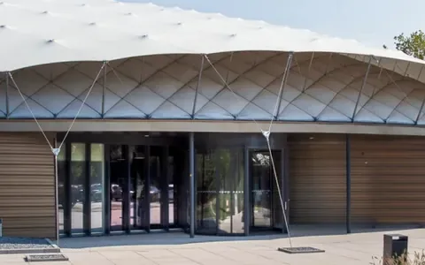
Nu, t/m 4 aprWojtek! De beer die soldaat werdVrijheidsmuseum Groesbeek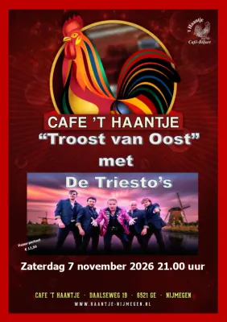
7 nov, 21.00 uurTroost van Oost 2026 met De Triesto’sCafe 't Haantje Nijmegen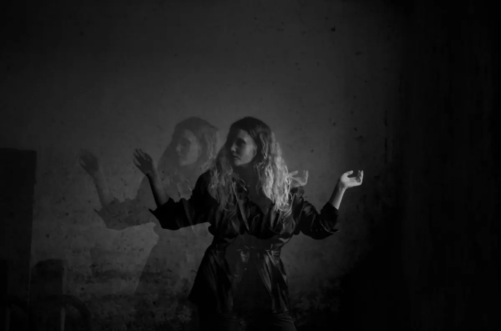
8 nov, 15.00 uurMagda Novels bij de BrauerijDe Brauerij Kranenburg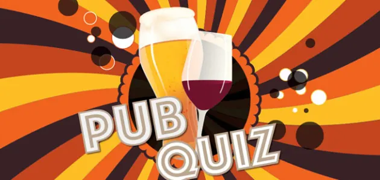
14 nov, 20.30 uurPubquiz bij café ’t HaantjeCafe 't Haantje Nijmegen 22 nov, 15.00 uurHilde Vos TrioDe Brauerij Kranenburg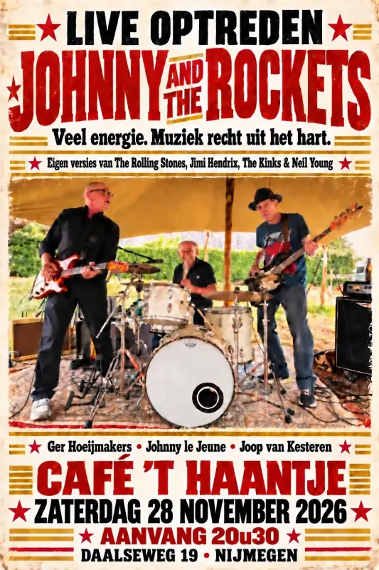
28 nov, 20.30 uurJohnny and the RocketsCafe 't Haantje NijmegenNu te zien

November 2026
3nov Krachtige collectieven3 nov, 19.30 uurThiemeloods Nijmegen
5nov
Krachtige collectieven3 nov, 19.30 uurThiemeloods Nijmegen
5nov “We the People” – 250 USA in koormuziek5 nov, 20.15 uurTitus Brandsma Gedachteniskerk Nijmegen
6nov
“We the People” – 250 USA in koormuziek5 nov, 20.15 uurTitus Brandsma Gedachteniskerk Nijmegen
6nov “Spurensuche” – Kamerconcert met strijkkwartet6 nov, 20.00 uurKleve
6nov
“Spurensuche” – Kamerconcert met strijkkwartet6 nov, 20.00 uurKleve
6nov Theatervoorstelling Buiten Bereik6 nov, 20.00 uurTheater het Badhuis Nijmegen
7novUitgelichtTroost van Oost 2026 met De Triesto’s7 nov, 21.00 uurCafe 't Haantje Nijmegen
7nov
Theatervoorstelling Buiten Bereik6 nov, 20.00 uurTheater het Badhuis Nijmegen
7novUitgelichtTroost van Oost 2026 met De Triesto’s7 nov, 21.00 uurCafe 't Haantje Nijmegen
7nov Toonkunstkoor Nijmegen zingt Brahms15 nov, 14.00 uur · Vanaf € 30Stevenskerk Nijmegen
20nov
Toonkunstkoor Nijmegen zingt Brahms15 nov, 14.00 uur · Vanaf € 30Stevenskerk Nijmegen
20nov
Krachtige collectieven3 nov, 19.30 uurThiemeloods Nijmegen
5nov“We the People” – 250 USA in koormuziek5 nov, 20.15 uurTitus Brandsma Gedachteniskerk Nijmegen
6nov“Spurensuche” – Kamerconcert met strijkkwartet6 nov, 20.00 uurKleve
6novTheatervoorstelling Buiten Bereik6 nov, 20.00 uurTheater het Badhuis Nijmegen
7novUitgelichtTroost van Oost 2026 met De Triesto’s7 nov, 21.00 uurCafe 't Haantje Nijmegen
7nov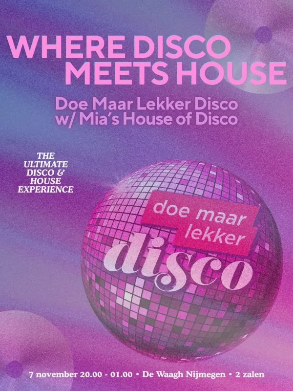
Doe Maar Lekker Disco w/ Mia’s House Of Disco – The Ultimate Disco & House Experience7 nov, 20.00 uurDe Waagh Nijmegen 8novUitgelichtMagda Novels bij de Brauerij8 nov, 15.00 uurDe Brauerij Kranenburg 8nov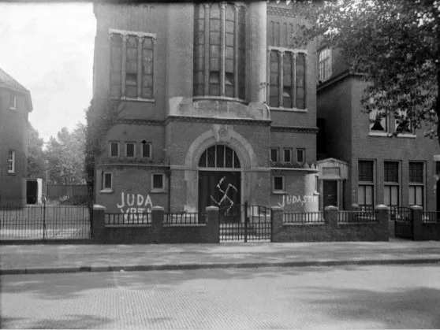
Herdenking Kristallnacht in het Vrijheidsmuseum8 nov, 11.00 uurVrijheidsmuseum Groesbeek 10nov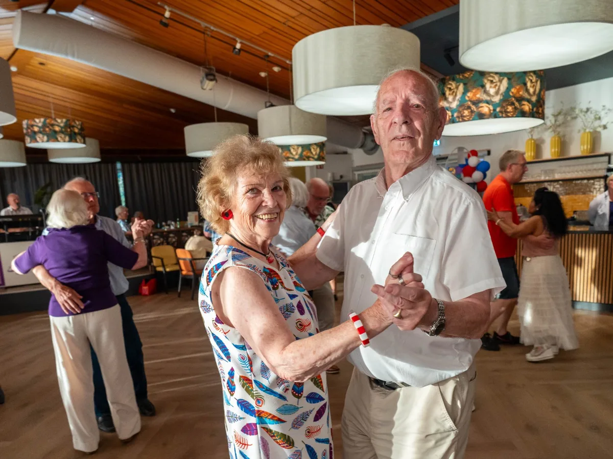
Swingende senioren in OBG10 nov, 17.30 uur · GratisOBG Nijmegen 14novUitgelichtPubquiz bij café ’t Haantje14 nov, 20.30 uurCafe 't Haantje Nijmegen 15novToonkunstkoor Nijmegen zingt Brahms15 nov, 14.00 uur · Vanaf € 30Stevenskerk Nijmegen
20nov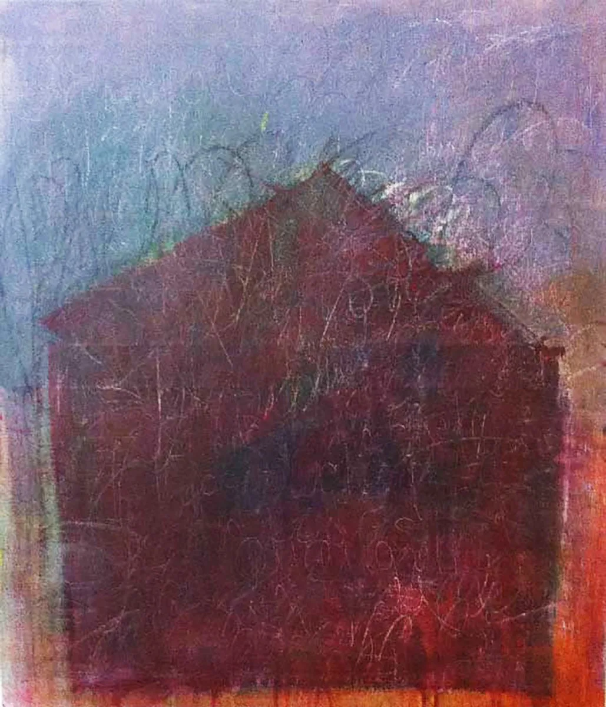
Expositie Marlie Duizings in kunst in het kerkje20 nov – 6 decKerkje van Persingen 20nov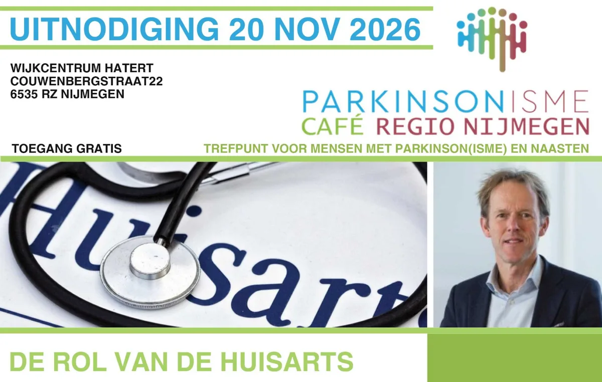
Parkinson Café Nijmegen20 nov, 12.00 uurWijkcentrum Hatert 21nov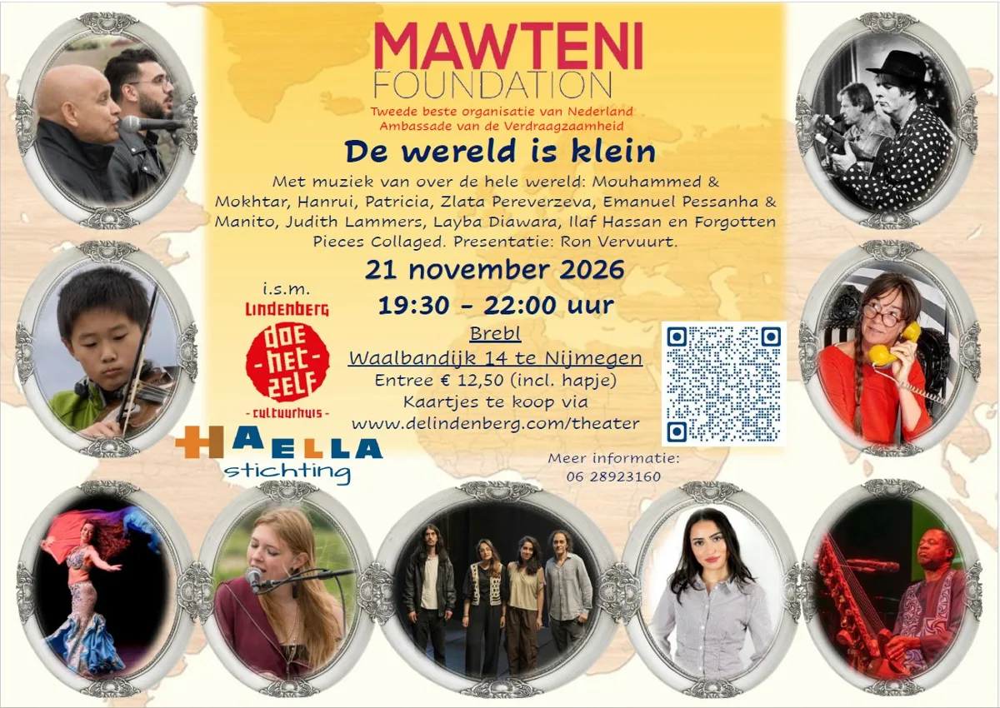
De wereld is klein21 nov, 17.30 uur · Vanaf € 12,50Brebl Nijmegen 21nov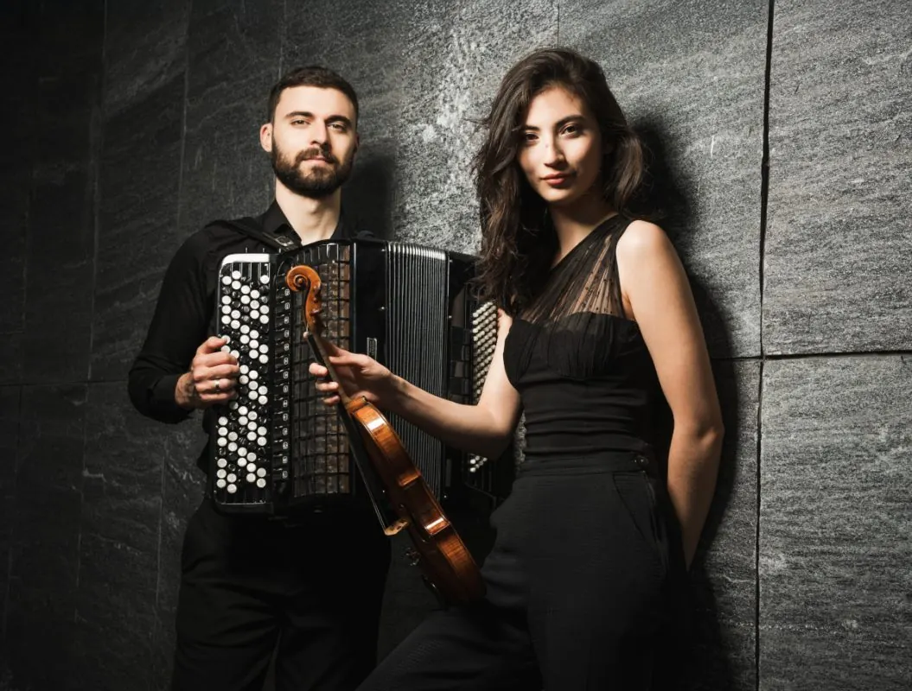
“Tanz durch die Epochen” – Kamerconcert met viool en accordeon21 nov, 18.00 uurKleve 22novUitgelichtHilde Vos Trio22 nov, 15.00 uurDe Brauerij Kranenburg 23nov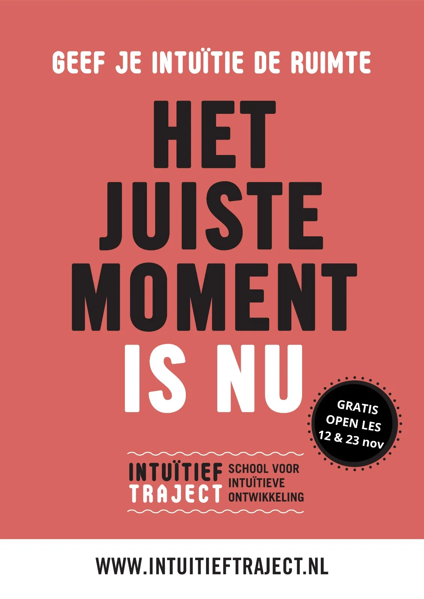
Maak kennis met intuïtieve ontwikkeling (open les)23 nov, 16.30 uur · GratisBosatelier Nijmegen 24nov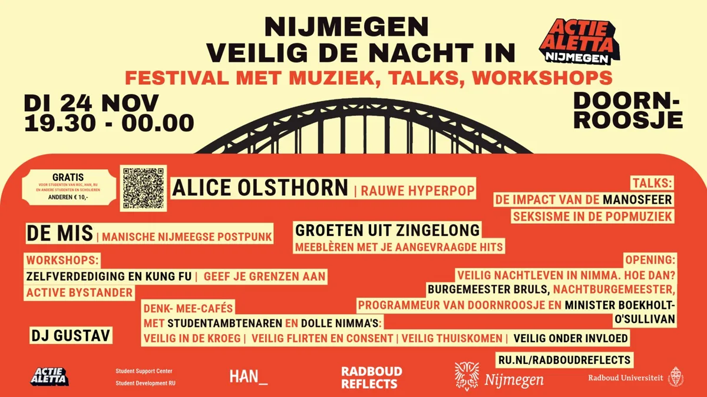
Nijmegen veilig de nacht in - Actie Aletta24 nov, 17.30 uur · Vanaf € 10Doornroosje Nijmegen 27nov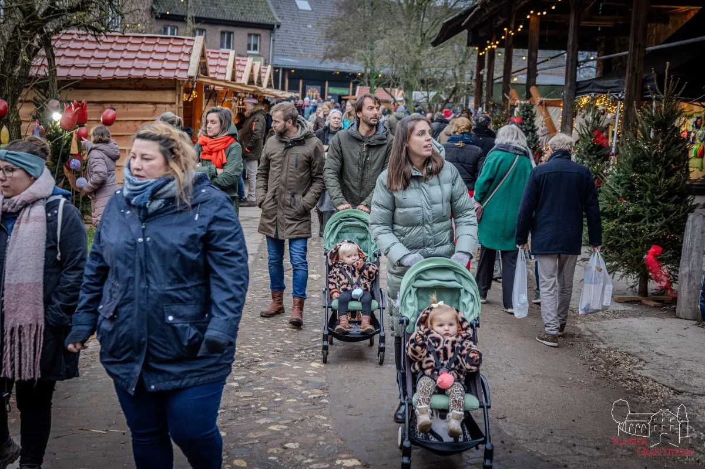
Kerstmarkt Klooster Graefenthal27 nov – 6 decKloster Graefenthal Goch 28novUitgelichtJohnny and the Rockets28 nov, 20.30 uurCafe 't Haantje Nijmegen 28nov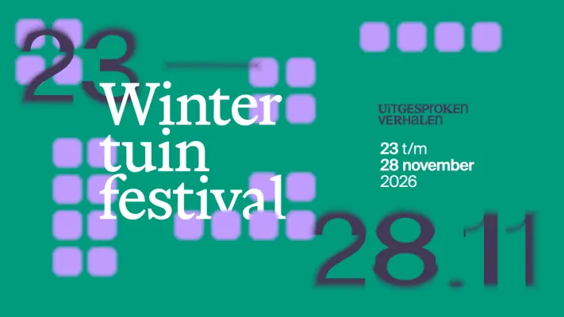
Wintertuinfestival28 nov, 20.00 uur 29nov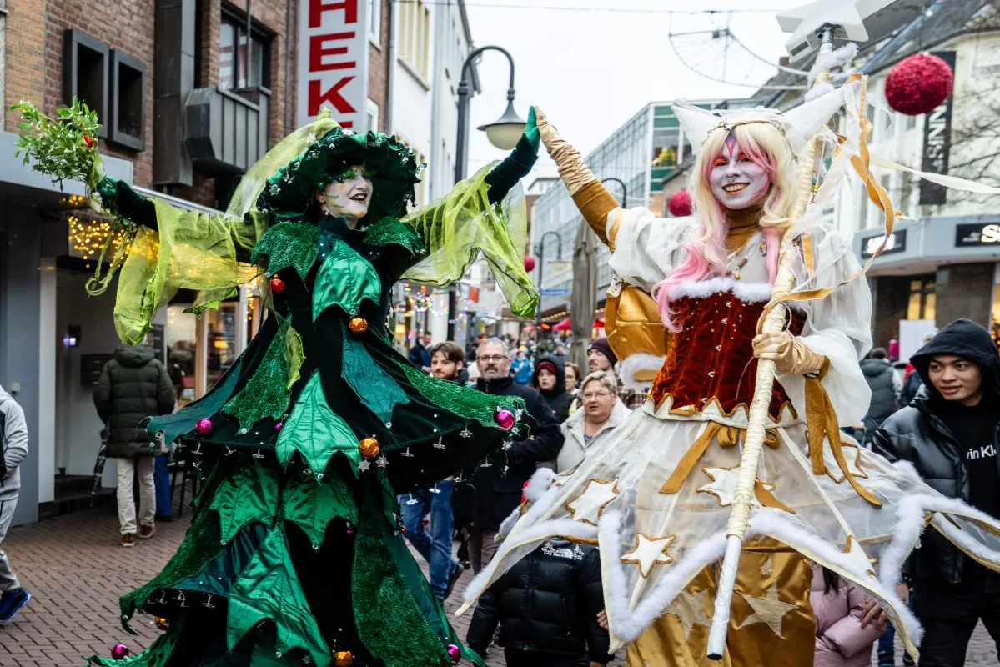
UitgelichtStadfeest & Koopzondag: Klever Winterzauber29 nov, 13.00 uurKleve 29novUitgelichtHighlight Tours in het Vrijheidsmuseum29 nov, 14.00 uur · Vanaf € 5Vrijheidsmuseum GroesbeekDecember 2026
4dec UitgelichtHighlight Tours in het Vrijheidsmuseum27 dec, 14.00 uur · Vanaf € 5Vrijheidsmuseum Groesbeek
UitgelichtHighlight Tours in het Vrijheidsmuseum27 dec, 14.00 uur · Vanaf € 5Vrijheidsmuseum Groesbeek
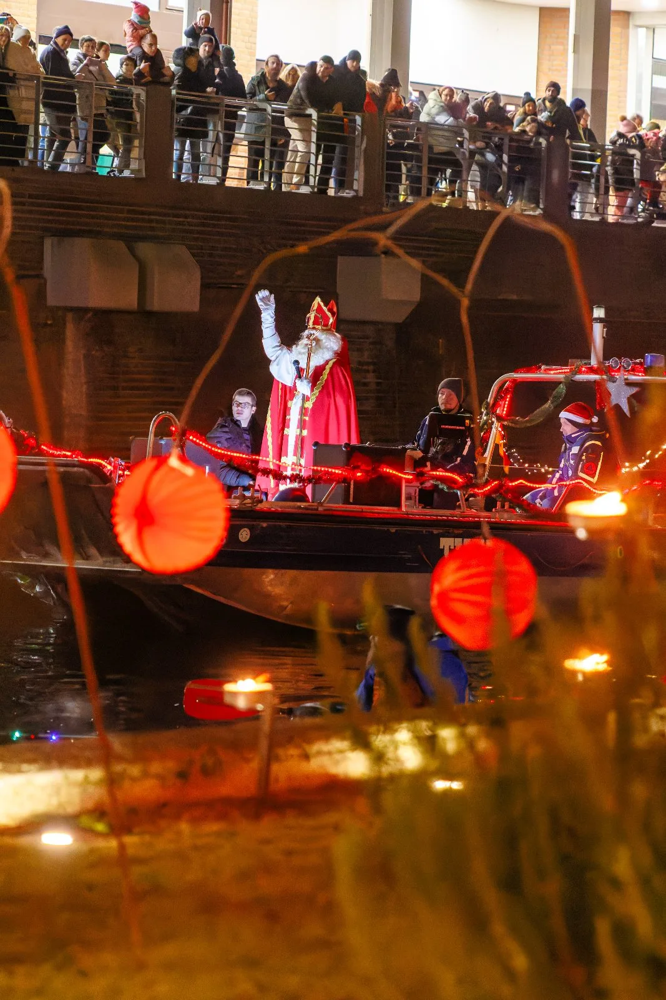
Sinterklaas komt over het water4 dec, 15.15 uur · GratisKleve 6dec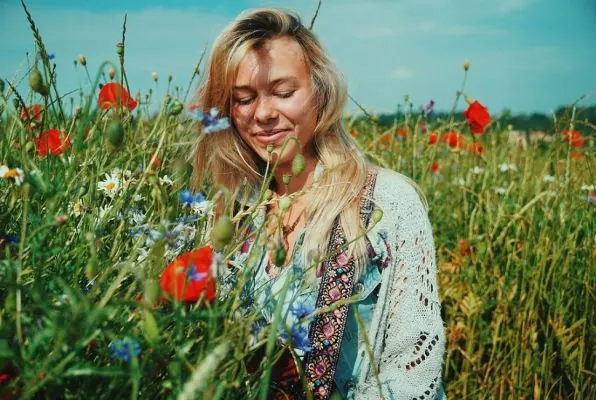
UitgelichtLotte Walda bij de Brauerij6 dec, 15.00 uurDe Brauerij Kranenburg 12dec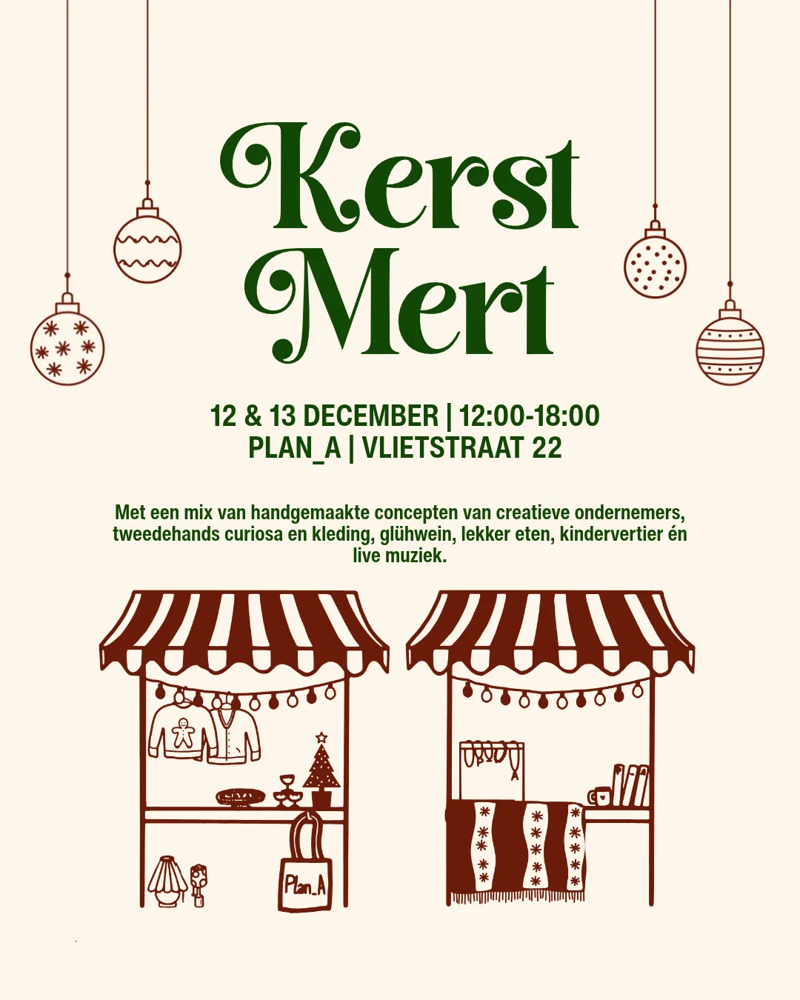
KerstMert!12 dec – 13 decPlan_A Nijmegen 13dec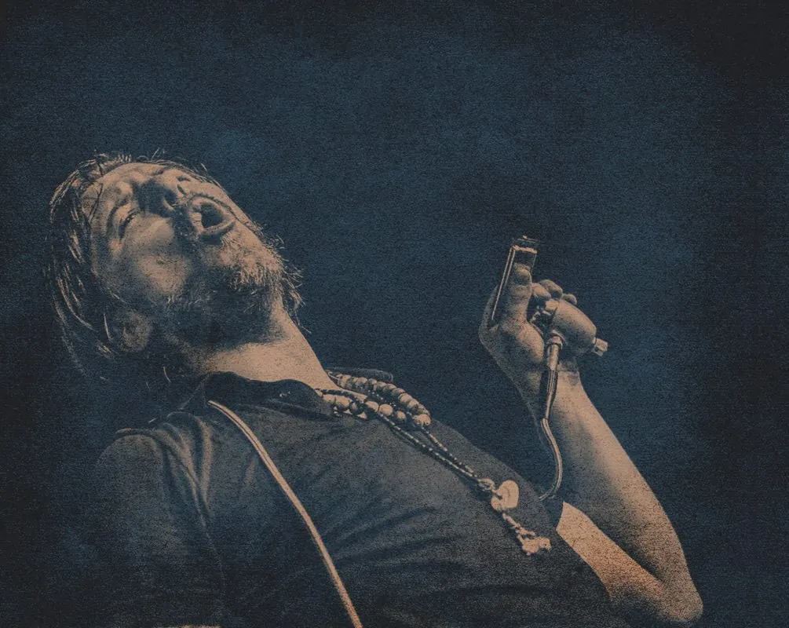
UitgelichtGuy Verlinde bij de Brauerij13 dec, 15.00 uurDe Brauerij Kranenburg 26decIN EXTASE – Gay dansfeest voor mannen 30+26 dec – 27 decDe Witte Raaf Nijmegen 27decUitgelichtHighlight Tours in het Vrijheidsmuseum27 dec, 14.00 uur · Vanaf € 5Vrijheidsmuseum Groesbeek